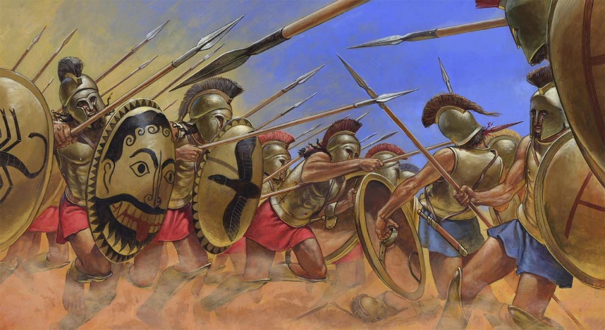

The Peloponnesian War (c. 431 - 404 BCE)

The Peloponnesian War was a long and destructive conflict between Athens and Sparta, the two most powerful city-states in ancient Greece. Athens led the Delian League, while Sparta was the leader of the Peloponnesian League. Both sides wanted to increase their influence and control over Greece. The war lasted for almost three decades and ended with the defeat of Athens and the rise of Sparta as the leading Greek power.
The war began in 431 BCE when the Spartan army invaded Attica, the region surrounding Athens. The fighting continued for years, with both sides winning important battles and suffering heavy losses. In 421 BCE, they agreed to the Peace of Nicias, hoping to end the conflict. However, the peace did not last, and tensions between their allies continued. Athens later launched the Sicilian Expedition (415-413 BCE), attempting to conquer Syracuse in Sicily. The campaign ended disastrously, destroying much of Athens' fleet and weakening its military strength.
After the failure in Sicily, Sparta became more determined to defeat Athens and received financial support from the Persian Empire. This allowed the Spartans to build a powerful navy and challenge Athens at sea. In 405 BCE, Sparta won a decisive victory at the Battle of Aegospotami, leaving Athens unable to protect its supply routes. Athens surrendered in 404 BCE, bringing the war to an end. Its empire was dismantled, and its democratic government was temporarily replaced by an oligarchy known as the Thirty Tyrants.
The consequences of the war were severe. Athens lost much of its wealth, naval power, and political influence, while Sparta became the strongest city-state in Greece. Many communities suffered from destruction, poverty, and the loss of lives. The conflict also deepened the divisions between Greek city-states, making cooperation more difficult and creating further instability.
The Peloponnesian War changed the course of ancient Greek history. Although Sparta won, its dominance did not last, and other powers eventually challenged its authority. The years of fighting weakened the Greek world as a whole, leaving its city-states more vulnerable to future threats. The war remains an important example of how rivalry, political disagreements, and the struggle for power can damage even the strongest civilizations.